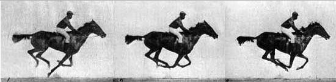

Lesson: Basic Animation

Ok, this lesson is a little long. To start, if the animation below
isn't playing you
can click on the canvas to restart it.
There are a few aspects of basic animation we need to cover. To start, there are
three required aspects to basic animation
in canvas.
- Drawing frames in rapid sequence.
- Clearing the canvas in between frames.
- Making small changes to the scene in each frame.
Drawing frames in rapid sequence can be done a number of ways.
For our purposes we'll use the
setInterval() and clearInterval()
methods.
setInterval()
will call run the specified code at regular intervals.
clearInterval()
will stop those regular intervals.
Important:
we'll have to call setInterval from an
event listener
An event listener allows our code
to "listen" to an event. In this case we'll be listening for the canvas to gain focus.
When you click on the canvas you give it focus. We also give it focus automatically
when we run the code (this happens behind the scenes). We will also call clearInterval
from the "blur" event on the canvas. This means that when we click away from the canvas
the animation will stop. It also ensures that if we run the code multiple times our
setInterval doesn't continue to run.
Our setInterval() allows us to draw frames in rapid sequence. Before each frame is drawn
we need to erase the canvas so that the drawings do not overlap. We use
clearRect()
like this:
context.clearRect(0, 0, canvas.width, canvas.height)
to clear a rectangle starting at the coordinates (0,0) and clearing
an area as wide and tall as the canvas (it clears the whole canvas).
Then we draw the next frame, slightly different from the last frame. If we
do this frequently enough then the animation looks smooth and natural. If we
slow it down, it looks jumpy.
Relevant Lessons:
setInterval(), Event Listeners, clearRect(), Functions